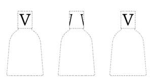

Trade Mark Journal No.2025/025 20 June 2025
UK00004183224 2 April 2025 (3)

The trademark is a position mark. The mark consists in the letter “V” positioned on the outside surface of the bottle cap. The dotted line marks the position of the trademark and does not form part of the mark.
3 Dimensional
International priority date claimed: 12 November 2024
(European Union Intellectual Property Office (EUIPO))
(019104369)
- Class 3
- Bleaching preparations and other substances for laundry use; Cleaning, polishing, scouring and abrasive preparations; Soaps; perfumary; Essential oils; Cosmetics; Hair care lotions; Dentifrices; Scented oils; Scented sachets; Perfumed soaps; Perfumed creams; Perfumed tissues; Amber [perfume]; Musk [perfumery]; Vanilla perfumery; Aromatics for perfumes; Air fragrancing preparations; Extracts of perfumes; Potpourris [fragrances]; Room scenting sprays; Scented ceramic stones; Scented linen sprays; Cushions filled with perfumed substances; Air fragrancing preparations; Natural oils for perfumes; Oils for perfumes and scents; Room perfumes in spray form; Oils for perfumes and scents; Scented bathing salts; Perfumed powder [for cosmetic use]; Extracts of flowers [perfumes]; Cleaning and fragrancing preparations; Scented body spray; Sachets for perfuming linen; Cushions impregnated with perfumed substances; Air fragrancing preparations; Perfumed lotions [toilet preparations]; Scented fabric refresher sprays; Fragrance emitting wicks for room fragrance; Perfumed oils for skin care; Scented oils used to produce aromas when heated; Scented body lotions and creams; Essential oils for use in the manufacture of scented products; Perfume oils for the manufacture of cosmetic preparations; Perfumed body lotions [toilet preparations]; Exfoliant creams; Make-up removing creams; Cosmetic creams; Washing creams; Cleansing creams; Hair creams; Toning creams [cosmetic]; Night cream; Day creams; Fluid creams [cosmetics]; Eye cream; Body cream; Cosmetic nourishing creams; Toners for cosmetic use; Facial peel preparations for cosmetic use; Facial scrubs [cosmetic]; Bath lotion; Cosmetic facial lotions; Fragrances for automobiles; Fragrance refills for non-electric room fragrance dispensers; Refills for electric room fragrance dispensers; Air fragrance reed diffusers.
Dr. Vranjes Firenze S.p.A.
Representative: Perani & Partners S.p.A. c/o Shepherd and Wedderburn LLP